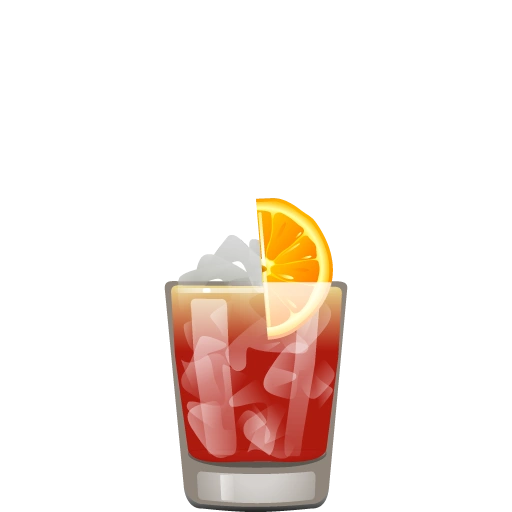
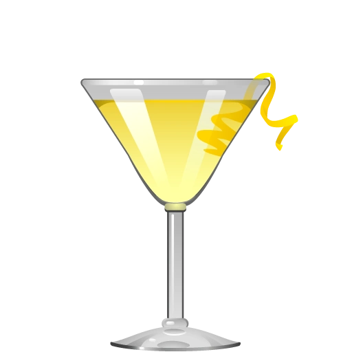
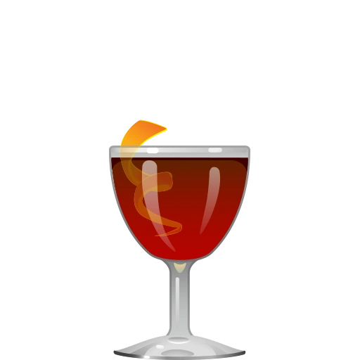

The Negroni traces its roots to Florence, Italy in the early 20th century. According to the most popular origin story, Count Camillo Negroni asked his bartender at Caffè Casoni to strengthen his favorite cocktail, the Americano, by replacing the soda water with gin. The bartender, Fosco Scarselli, obliged and garnished it with an orange peel instead of the Americano's lemon twist to signal the change. The resulting equal-parts blend of gin, Campari, and sweet vermouth became a timeless classic-bold, bitter, and perfectly balanced.
| 1 part | Gin |
| 1 part | Campari |
| 1 part | Sweet Vermouth |
| 1 | Orange twist (for garnish) |
Stir with ice and strain into a rocks glass over a large ice cube. Garnish with an orange twist.
The Negroni is traditionally served in a short, heavy-bottomed rocks glass (also called an Old Fashioned glass), a sturdy vessel that complements its spirit-forward character. The thick base gives the drink a satisfying weight in hand and helps insulate the cocktail as it rests over a large cube or fresh ice. Its wide rim also allows the bright oils from the orange peel garnish to hit your nose with each sip, enhancing the bittersweet aroma.
The Negroni has had a massive ripple effect on modern cocktail culture, inspiring an entire family of "Negroni riffs" built on its simple equal-parts formula. Swap the gin for bourbon and you get a Boulevardier; use Prosecco instead and it becomes a Negroni Sbagliato. Bartenders love it because the structure is endlessly adaptable — change the base spirit, tweak the bitter component, adjust the vermouth — and you've got something new while keeping that same bold, bittersweet backbone. It's basically the template for countless spirit-forward, balanced cocktails that followed.

Negroni Sbagliato
Swap gin for prosecco for a sparkling, lighter version.

White Negroni
Made with gin, Lillet Blanc (or dry vermouth), and Suze (a gentian liqueur).

Boulevardier
Swap gin with bourbon for a smoky, earthytwist.
| Shiny Prize | Valentina's | Cryptatropa | Cheeky Martini | Filibuster | The Bus Stop | COVE | Legends | Average |
|---|